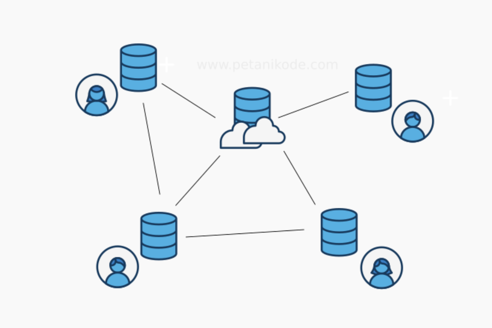
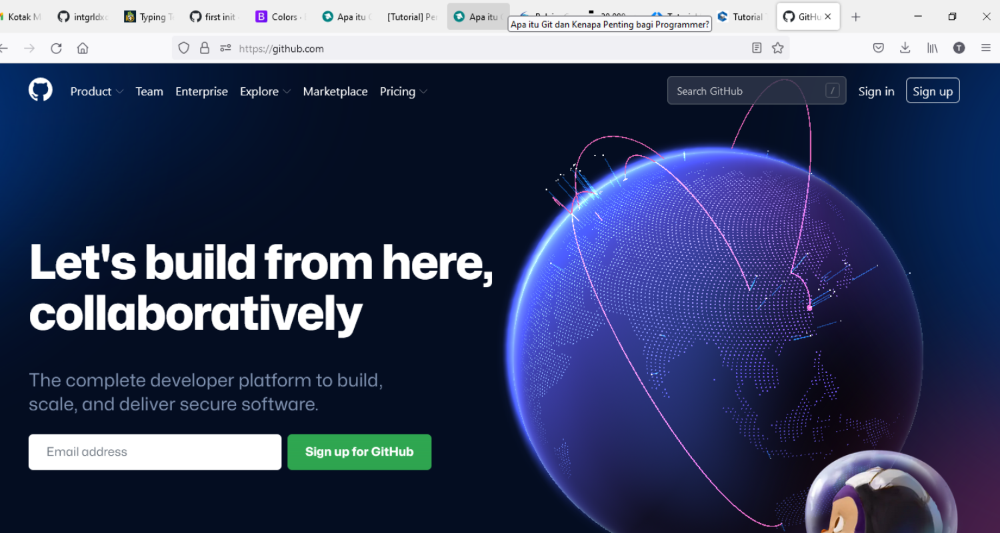

Apa Itu Git

Pengertian Git
Git adalah salah satu sistem pengontrol versi (Version Control System) pada proyek perangkat lunak yang diciptakan oleh Linus Torvalds. Pengontrol versi bertugas mencatat setiap perubahan pada file proyek yang dikerjakan oleh banyak orang maupun sendiri.
Git dikenal juga dengan distributed revision control (VCS terdistribusi), artinya penyimpanan database Git tidak hanya berada dalam satu tempat saja.
Semua orang yang terlibat dalam pengkodean proyek akan menyimpan database Git, sehingga akan memudahkan dalam mengelola proyek baik online maupun offline.
VCS terpusat memiliki beberapa kekurangan:
- Semua tim harus terkoneksi ke jaringan untuk mengakses source-code;
- Tersimpan di satu tempat, nanti kalau server bermasalah bagaimana?
Karena itu, Git hadir untuk menutupi kerkurangan yang dimiliki oleh VCS terpusat.
Bagaimana Cara Menggunakan Git?
Ada beberapa langkah yang perlu dilakukan untuk menggunakan git yaitu :
- Membuat akun pada layanan github
- Membuat Repositori online
Buka website github, buat akun baru terlebih dahulu
Setelah terbuat akun-nya, login dengan akun baru(kalau langsung diarahkan ke halaman utama), setelah itu pada pojok kanan atas terdapat tombol “+”, klik button tersebut dan pilih “new repository”.